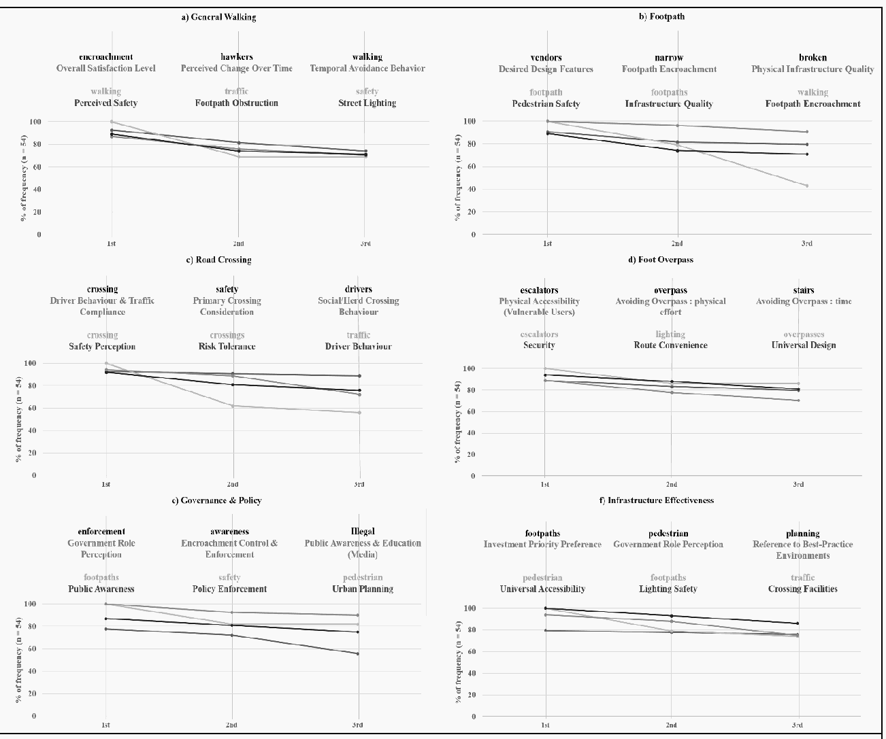

Journal Paper: Under Review
Identifying Pedestrian Obstacles in a Developing Mega-City: A Multi-Method Focus Group Discussion Analysis with Geospatial Triangulation
Under review
| Authors | Tabassum, L., Kafil, J. F. B., Azad, A. K., Hossain, M. Corresponding author: Lubaba Tabassum. |
|---|---|
| Venue | Transportation Research Record: Journal of the Transportation Research Board |
| Status | Under review |
| Project | Pedestrian Obstacles and Walkability in a Developing Megacity |
Abstract
Objectives: The primary objectives of this research are to identify obstacles pedestrians encounter while accessing different types of pedestrian facilities in a developing mega-city integrating focus group discussion findings, and to validate these identified obstacles through triangulation with independently-sourced open geospatial data, thereby examining the extent of convergence and divergence between perception-based and infrastructure-based evidence for footpaths, road crossings, and foot overpasses. Widespread yet under-documented, pedestrian obstacles in developing mega-cities continue to undermine safety and equitable mobility despite ongoing infrastructure investment, making this issue pressing.
Methods: Fifty-four focus group discussion (FGD) responses were collected across four Dhaka neighborhoods: Mirpur, Uttara, Gulshan, and Dhanmondi, chosen for contrasting commercial density and infrastructure typologies, following an initial phase to refine the survey instrument. Responses were analyzed using four complementary methods: AI-assisted deductive thematic analysis, word-frequency analysis, inductive qualitative coding, and LDA topic modelling. Identified obstacles were triangulated against OpenStreetMap (OSM) data on pedestrian crossings, footways, and commercial density for the same areas, normalized by area extent for cross-area comparison.
Findings: Across all four methods, footpath encroachment and driver non-compliance emerged as the dominant obstacles, with consensus at 87% or higher. Geospatial triangulation supported these findings, in Mirpur, near-universal encroachment consensus (96.3%) matched elevated commercial density. Yet the comparison also exposed a key limitation, infrastructure quantity alone cannot ensure walkability where enforcement is weak.
Novelty: Rather than treating perception-based surveys and infrastructure-based inventories as separate evidence, as the field has typically done, this study develops a replicable pipeline triangulating multi-method qualitative obstacle identification with open-access geospatial data.
Practical Applications: These results call for area-differentiated pedestrian policy, enforcing vending-zone regulation in dense corridors such as Mirpur, while directing new crossings toward Uttara and Dhanmondi, where infrastructure remains critically deficient.
Abstract as in the conference version: 106th Annual Meeting of the Transportation Research Board (TRB 2027), Washington, D.C..
Keywords: Pedestrian obstacles; Walkability; Focus group discussion; Qualitative triangulation; Geospatial analysis; Footpath encroachment; Road crossing safety
Figures

